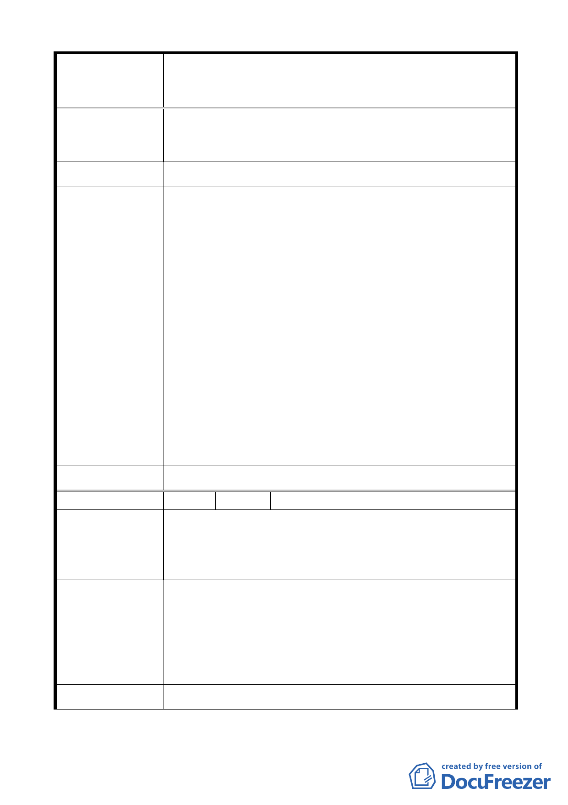

變更臺北市中山區北安段三小段 297-1 地號等20 筆高職
案 名 用地為機關用地（供國防部國防專區使用）及抽水站用地主
要計畫案
村改建安置均無安排安置，是否因主管機關刻意遺忘處
理安置？（同地點大官都有安置），如確認有需要建立以
上專區，請先作好原住戶安置，再作拆除動作。
建 議 辦 法 同陳情理由。
(一) 按都市計畫公共設施多目標使用辦法規定，機關用地
得立體多目標作「停車場」使用，未來經國防部評估
在不妨礙國防機密及國家安全之前提下，得依前開規
定辦理。
(二) 依本府工務局水利工程處評估，目前大直地區僅 1 處
雨水抽水站，且其抽水量尚不足 3cms，且未考量備援
容量，爰選定於本案抽水站用地範圍增設抽水站，預
市府回覆意見
計抽水量將可增加 20cms，尖峰流量降低 17.5cms，約
降低 30.4％。
(三) 該範圍內案經本府教育局北市教工字第 10233752800
號函說明「本案建物係屬無權占用…爰本案占建戶應
返還不當得利，本局刻依『臺北市政府加強清理及處
理被占用市產計畫』辦理中」，本府工務局水利處將俟
教育局依規定完成占用處理、管理機關變更及都市計
畫變更通過後，復依「臺北市舉辦公共工程拆遷補償
自治條例」辦理後續事宜。
大 會 決 議 依市府回應意見辦理。
編 號 6 陳情人 畢無量
本地號用地目前為花博停車場，尤其忠烈祠及七海文化園區
無停車場造成北安路交通癱瘓，如變更為機關用地興建三官
陳 情 理 由 俱樂部、軍方休閒設施，供官兵享受，不符臺北市及地區發
展需要，另抽水站應設它處，均不同意變更為機關用地。
應依都市發展整體實際需要考量興建停車場，此地已無其它
閒置空間可建停車場，如要變更請國防部開放福西憲兵營區
及海軍司令部營區，供忠烈祠、七海文化園區停車使用。
建 議 辦 法 另興建國防部三官俱樂部、軍方休閒設施，應建地下停車場
供國防部、空軍司令部官兵洽公及周邊社區停車使用，以符
合多目標使用。
市 府 回 覆 意 見 同編號 5（一）市府回應說明。
- 10 -